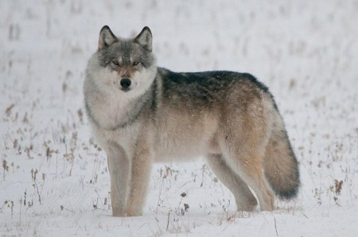

Краткая информация о волке
Волк обыкновенный (или серый волк) – это крупный хищный зверь из
семейства псовых. Длина тела взрослого волка может достигать 180 см (с
хвостом), а высота в холке – 90 см. Вес волка колеблется от 30 до 50 кг,
некоторые самые крупные животные могут весить до 80 килограммов. Самки
волчицы обычно меньше волков самцов.

Морда у волка вытянутая, зубы острые и крепкие. Лапы довольно длинные,
когти не очень острые, так как стачиваются во время бега. Шерсть обычно
светло-серая, бывает с черным, белым или рыжеватым оттенком, встречаются
волки с абсолютно черной и абсолютно белой шерстью. С возрастом цвет
шерсти у волка может сильно меняться.
Распространение
Волки обитают почти по всей территории Евразии и Северной Америки.
Животные хорошо приспособлены к жизни в разных условиях. Они хорошо себя
чувствуют в тундре, в лесу, в степи, в тайге и в горах. В настоящее
время численность волков сильно сократилась, во многих регионах эти
животные находятся под угрозой исчезновения.